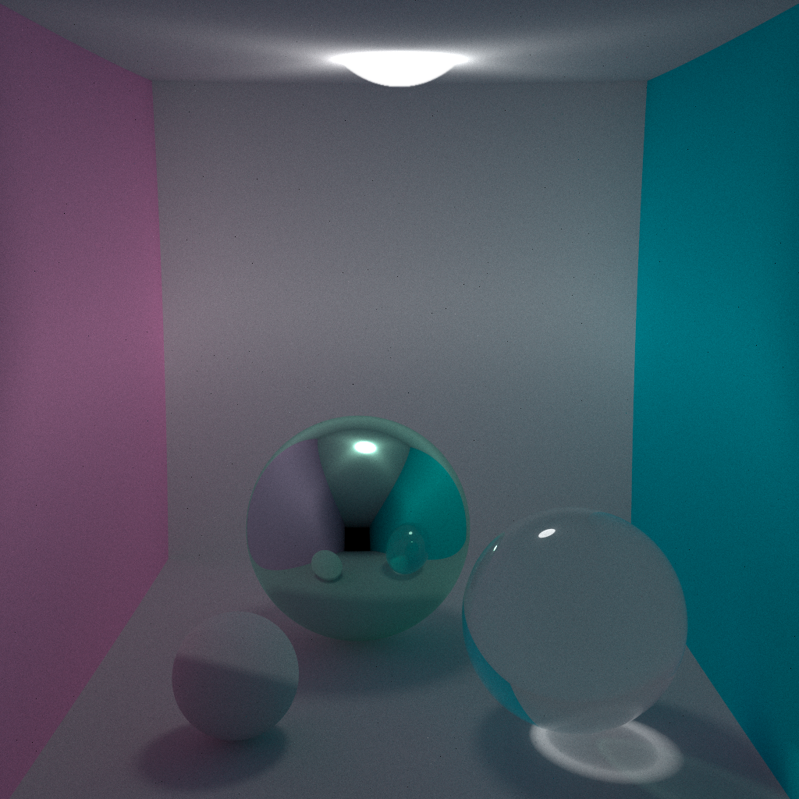

Path tracing is an algorithm for rendering images in 3D-scenes where the global
illumination is faithful to reality. This algorithm is based on ray tracing method
but includes additional techniques that gives a far more accurate simulation of
lightning. Path tracing naturally simulates many physical effects such as shadows,
motion blur, caustics, ambient occlusion etc.
More about algorithm here.
Although path tracing is physically correct method of image rendering, modern hardware
still has some of limitations that don`t allow to use all the advantages of the
algorthm. For example, if we draw an analogy beside rod cells in human eyes with
digital matrix of then our eye has several millons of pixels that much more than number
of pixels in monitors. That`s the reason why we can`t get fully antialliased image
on the screen. This is where sampling is come up.
This technique characterized with SPP (Samples Per Pixel) parameter and its formula
pretty straightforward:
Path tracing related to embarrassingly parallel algorithms, so it is obvious to make all the computations in GPU. In this program I used cross-platform technology called OpenCL. Here is some examples of running the program on different devices with different SPP values.
| Manufacter | Type | Device | SPP | Time (s) |
|---|---|---|---|---|
| AMD | GPU | Radeon R9 290x | 10 | 0.2589 |
| Nvidia | GPU | GeForce GT 630 | 10 | 0.3492 |
| AMD | CPU | FX-6300 Vishera | 10 | 1.0322 |
| Manufacter | Type | Device | SPP | Time (s) |
|---|---|---|---|---|
| AMD | GPU | Radeon R9 290x | 100 | 2.7655 |
| Nvidia | GPU | GeForce GT 630 | 100 | 3.3215 |
| AMD | CPU | FX-6300 Vishera | 100 | 13.0246 |
| Manufacter | Type | Device | SPP | Time (s) |
|---|---|---|---|---|
| AMD | GPU | Radeon R9 290x | 1000 | 26.9815 |
| Nvidia | GPU | GeForce GT 630 | 1000 | 31.2652 |
| AMD | CPU | FX-6300 Vishera | 1000 | 140.5217 |
The last image was produced with 10k samples per pixel and as you can see it looks kinda realistic, but it still takes alot of time for processing images like that even on modern GPUs.
This is very very very old code, so it might not work properly. Use this at your own risk. ¯\_(ツ)_/¯
.zipTopics: c/c++